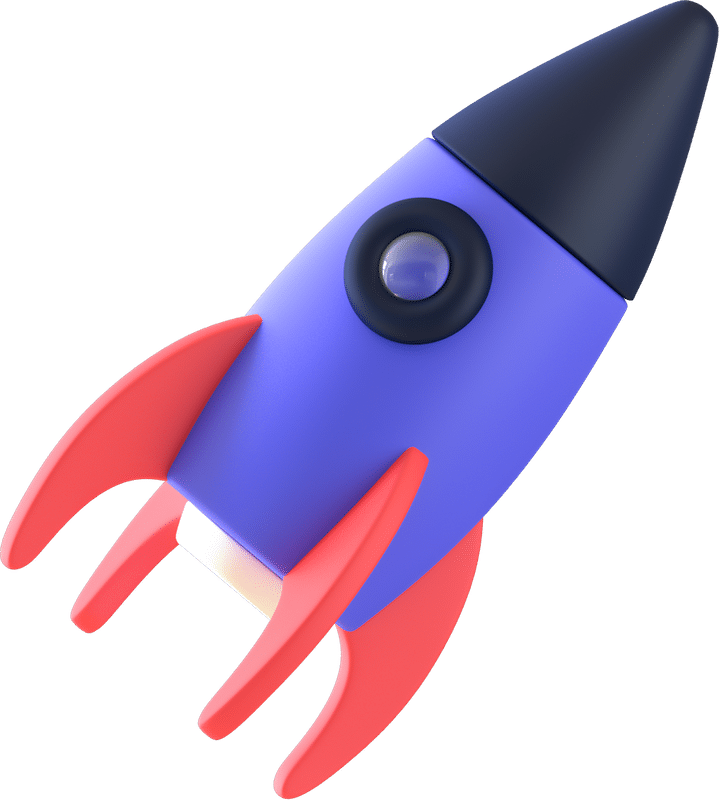

Perfil Profesional
Perfil Profesional
Liderazgo Estratégico en Comunicación Pública de la Ciencia, Género y Sostenibilidad
Más de 25 años tendiendo puentes entre el rigor académico y la apropiación social del conocimiento. Bióloga de la UNAM, especialista en igualdad de género, gestora de proyectos de ciencia de alto impacto y fundadora de STEAMXperience.

"Cómo el caos puede potenciar una vocación"
Charla sobre convertir el caos en motor de vocación científica.

Ka'Yok' Planetario: 600% incremento en ingresos
Ka'Yok' Planetario: 600% incremento en ingresos, 200% en afluencia
 Comunicación Pública de la Ciencia
Comunicación Pública de la Ciencia
Reportera, columnista y comunicadora
- Reportera de ciencia en Reforma y agencia de noticias de la Academia Mexicana de Ciencias
- Colaboradora en ¿Cómo ves? (UNAM) y SciDev.Net
- Columnista "Sucediendo a Hipatia"
 Alta Dirección
Alta Dirección
Gestión de alto impacto
- CONAHCYT: presupuesto de $500 MDP y 6 convocatorias nacionales
- Presidenta de AMPAC (2016–2018)
- COQHCYT: Directora Adjunta de Apropiación Social del Conocimiento (2023–presente)
 Oratoria y Presencia Mediática
Oratoria y Presencia Mediática
Conferencias y talleres
- TEDxCancún: "Cómo el caos puede potenciar una vocación"
- Entrevistas en IMER Noticias
- ANUIES-TIC: charla "La ciencia es nuestra"
Recursos gestionados en CONAHCYT
Incremento en ingresos, Ka'Yok'
Crecimiento sostenido en afluencia
Asignados mediante 6 convocatorias nacionales
 Investigación
Investigación
Formación Científica
- Licenciatura en Biología, UNAM (2006, mención honorífica)
- Doctoranda en Ecología y Gestión Ambiental
- Bioseguridad y OGMs en Genok, Noruega (PNUMA)
- Formación en biología molecular, ecología arrecifal y conservación
Redes y Conservación
- Creadora de la Red Nacional de Jardines Etnobiológicos (desde CONAHCYT)
- Jardín de Cactáceas, Cámara de Diputados
- Amigos de Sian Ka'an: manejo costero en Xcalak y Bala'an K'aax
- Expertise en bioseguridad y organismos genéticamente modificados
- Miembro de la Society of Environmental Journalists (SEJ)
Innovación en Apropiación Social
- Programa Divulga-STEAM
- Fundadora de STEAMXperience (2024)
- Remodelación del planetario de Chetumal: $14 MDP
- Red Nacional de Espacios de Conocimiento
- Tianguis "Frutos que dan vida"
 Especialización
Especialización
Formación en igualdad
- Máster en Igualdad, Universidad de Castilla-La Mancha (2014)
- Diplomado en Feminismos Populares, Universidad de la Tierra (en curso)
 Liderazgo
Liderazgo
Comités y certificaciones
- Creación y dirección del Comité EDI en IPS (International Planetarium Society)
- Certificación Inmujeres en Equidad de Género en la Universidad del Caribe
- Edvolution: enfoques inclusivos en educación
Ciencia con perspectiva de género
- "Ellas en la ciencia" (con Secretaría de Educación de Quintana Roo)
- Conferencias "Científicas que la historia olvidó"
- Carta a la presidenta Sheinbaum (2025) sobre paridad de género en el FCE
 UNAM, 2023
UNAM, 2023
¿Cómo ves? Antología de medio ambiente
Antología publicada por la UNAM con contribuciones sobre ecología y biodiversidad para jóvenes adultos.
ISBN 978-607-30-7613-5
 ¿Cómo ves?, Nov. 2024
¿Cómo ves?, Nov. 2024
"La conmovedora historia de Pompeyo"
Relato sobre el rescate y reintroducción de un manatí huérfano en el Caribe mexicano.
40 años de Cancún: Identidad y sustentabilidad
Análisis del crecimiento urbano de Cancún y los desafíos de equilibrio ambiental ante el turismo masivo.
Rescate e innovación de recetas tradicionales
Artículo en la revista URBS de la UAM sobre nutrición, cultura y productos subutilizados del norte de Quintana Roo.
Periodismo
Trayectoria periodística
- Reforma: reportera de ciencia (1999–2003)
- SciDev.Net: corresponsal para América Latina
- Courrier International (Francia): artículo sobre transgénicos
- Agencia de noticias de la Academia Mexicana de Ciencias

Fundada en 2024, STEAMXperience diseña expediciones educativas y experiencias de aprendizaje vivencial que integran ciencia, tecnología, ingeniería, arte y matemáticas con la sabiduría tradicional — "saberes con sentido".
La metodología parte de la premisa de que la tecnología puede respetar la naturaleza y la ciencia es fundamental para preservar la sabiduría ancestral.
Proyecto destacado: propuesta técnica para el Departamento de Educación de Temuco, Chile — expedición educativa para 30 estudiantes (~$145,000 USD) con visitas al LANCIC de la UNAM, Puerto Morelos, Museo del Desierto y Xochimilco.

Innovación
Expediciones educativas de alto nivel técnico.
Creatividad
Arte y diseño integrados en la metodología STEAM.
Excelencia
Aliados: UNAM LANCIC, Puerto Morelos, Museo del Desierto.
Saberes
Dra. Luz Lazos Ramírez, experta en educación intercultural y filosofía de la ciencia.
IMER Noticias
Entrevista: Mujeres y niñas en la ciencia
Entrevista sobre la brecha de género en la ciencia y programas para impulsar la participación de niñas.
Leer más →


Reportera de ciencia en Reforma. Co-fundación de la agencia de noticias de la Academia Mexicana de Ciencias.
Mudanza a Cancún. Beca en Genok, Noruega (bioseguridad y OGMs). Profesora en la Universidad del Caribe.
Miembro de la Society of Environmental Journalists (SEJ). Conferencia en UT Austin.
Licenciatura en Biología, UNAM (mención honorífica).
Directora del Planetario Ka'Yok' de Cancún. Máster en Igualdad, Universidad de Castilla-La Mancha.
Presidenta de la Asociación Mexicana de Planetarios (AMPAC).
CONAHCYT — Directora de Acceso Universal al Conocimiento. Gestión de $500 MDP, 6 convocatorias nacionales.
COQHCYT — Directora Adjunta de Apropiación Social del Conocimiento.
Fundación de STEAMXperience.